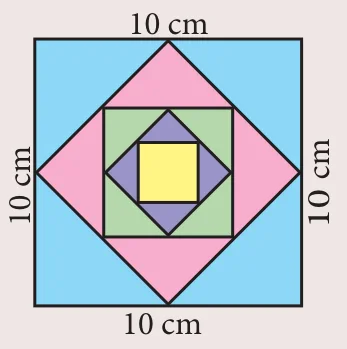

A series whose terms are in Geometric progression is called Geometric series.
Let \(a, ar, ar^2, \ldots, ar^{n-1}, \ldots\) be the Geometric Progression.
The sum of first \(n\) terms of the Geometric progression is
\(S_n = a + ar + ar^2 + \cdots + ar^{n-2} + ar^{n-1} \qquad \ldots(1)\)
Multiplying both sides by \(r\), we get \(rS_n = ar + ar^2 + ar^3 + \cdots + ar^{n-1} + ar^n \qquad \ldots(2)\)
\((2) - (1) \Rightarrow rS_n - S_n = ar^n - a\)
\(S_n(r - 1) = a(r^n - 1)\)
Thus, the sum to n terms is \(S_n = \dfrac{a(r^n - 1)}{r - 1},\ r \ne 1.\)
Note
The above formula for sum of first \(n\) terms of a G.P. is not applicable when \(r = 1\).
If \(r = 1\), then \(S_n = a + a + a + \cdots + a = na\)
Progress Check
- A series whose terms are in Geometric progression is called \(\underline{\qquad}\).
- When \(r = 1\), the formula for finding sum to \(n\) terms of a G.P. is \(\underline{\qquad}\).
- When \(r \ne 1\), the formula for finding sum to n terms of a G.P. is \(\underline{\qquad}\).
2.10.1 Sum to infinite terms of a G.P.
The sum of infinite terms of a G.P. is given by \(S_\infty = a + ar + ar^2 + ar^3 + \cdots = \dfrac{a}{1 - r},\ -1 < r < 1\)
Example 2.46
Find the sum of 8 terms of the G.P. \(1, -3, 9, -27, \ldots\)
Solutions
Here, the first term \(a = 1\), common ratio \(r = \dfrac{-3}{1} = -3 < 1\), Here, \(n = 8\).
Sum to \(n\) terms of a G.P. is \(\quad S_n = \dfrac{a(r^n - 1)}{r - 1}\) if \(r \ne 1\)
Hence, \(\quad S_8 = \dfrac{1((-3)^8 - 1)}{(-3) - 1} = \dfrac{6561 - 1}{-4} = -1640\)
Example 2.47
Find the first term of a G.P. in which \(S_6 = 4095\) and \(r = 4\).
Solution
Common ratio \(= 4 > 1\), Sum of first 6 terms \(S_6 = 4095\)
Hence, \(\quad S_6 = \dfrac{a(r^n - 1)}{r - 1} = 4095\)
\(\because r = 4,\ \dfrac{a(4^6 - 1)}{4 - 1} = 4095 \Rightarrow a \times \dfrac{4095}{3} = 4095\)
First term \(\quad a = 3\).
Example 2.48
How many terms of the series \(1 + 4 + 16 + \cdots\) make the sum 1365?
Solution
Let \(n\) be the number of terms to be added to get the sum 1365
\(a = 1,\ r = \dfrac{4}{1} = 4 > 1\)
\(S_n = 1365 \Rightarrow \dfrac{a(r^n - 1)}{r - 1} = 1365\)
\(\dfrac{1(4^n - 1)}{4 - 1} = 1365 \text{ so, } (4^n - 1) = 4095\)
\(4^n = 4096 \text{ then } 4^n = 4^6\)
\(n = 6\)
Example 2.49
Find the sum \(3 + 1 + \dfrac{1}{3} + \ldots\infty\)
Solution
Here \(a = 3,\ r = \dfrac{t_2}{t_1} = \dfrac{1}{3}\)
Sum of infinite terms \(\quad S_\infty = \dfrac{a}{1 - r} = \dfrac{3}{1 - \frac{1}{3}} = \dfrac{9}{2}\)
Progress Check
- Sum to infinite number of terms of a G.P. is \(\underline{\qquad}\).
- For what values of \(r\), does the formula for infinite G.P. valid?
Example 2.50
Find the rational form of the number \(0.6666\ldots\)
Solution
We can express the number \(0.6666\ldots\) as follows
\(0.6666\ldots = 0.6 + 0.06 + 0.006 + 0.0006 + \cdots\)
We now see that numbers \(0.6, 0.06, 0.006 \ldots\) form a G.P. whose first term \(a = 0.6\) and common ratio \(r = \dfrac{0.06}{0.6} = 0.1\). Also \(-1 < r = 0.1 < 1\)
Using the infinite G.P. formula, we have
\(0.6666\ldots = 0.6 + 0.06 + 0.006 + 0.0006 + \cdots = \dfrac{0.6}{1 - 0.1} = \dfrac{0.6}{0.9} = \dfrac{2}{3}\)
Thus the rational number equivalent of \(0.6666\ldots\) is \(\dfrac{2}{3}\)
Activity 5

The sides of a given square is 10 cm. The mid points of its sides are joined to form a new square. Again, the mid points of the sides of this new square are joined to form another square. This process is continued indefinitely. Find the sum of the areas and the sum of the perimeters of the squares formed through this process.
Example 2.51
Find the sum to \(n\) terms of the series \(5 + 55 + 555 + \cdots\)
Solution
The series is neither Arithmetic nor Geometric series. So it can be split into two series and then find the sum.
\(\begin{aligned} 5 + 55 + 555 + \cdots + n \text{ terms} &= 5[1 + 11 + 111 + \cdots + n \text{ terms}] \\ &= \dfrac{5}{9}[9 + 99 + 999 + \cdots + n \text{ terms}] \\ &= \dfrac{5}{9}[(10 - 1) + (100 - 1) + (1000 - 1) + \cdots + n \text{ terms}] \\ &= \dfrac{5}{9}[(10 + 100 + 1000 + \cdots + n \text{ terms}) - n] \\ &= \dfrac{5}{9}\left[\dfrac{10(10^n - 1)}{(10 - 1)} - n\right] = \dfrac{50(10^n - 1)}{81} - \dfrac{5n}{9} \end{aligned}\)
Progress Check
- Is the series \(3 + 33 + 333 + \ldots\) a Geometric series?
- The value of \(r\), such that \(1 + r + r^2 + r^3 \ldots = \dfrac{3}{4}\) is \(\underline{\qquad}\).
Example 2.52
Find the least positive integer \(n\) such that \(1 + 6 + 6^2 + \cdots + 6^n > 5000\)
Solution
We have to find the least number of terms for which the sum must be greater than 5000.
That is, to find the least value of \(n\). such that \(S_n > 5000\)
We have, \(\quad S_n = \dfrac{a(r^n - 1)}{r - 1} = \dfrac{1(6^n - 1)}{6 - 1} = \dfrac{6^n - 1}{5}\)
\(S_n > 5000 \Rightarrow \dfrac{6^n - 1}{5} > 5000\)
\(6^n - 1 > 25000 \Rightarrow 6^n > 25001\)
\(\because \quad 6^5 = 7776 \text{ and } 6^6 = 46656\)
The least positive value of \(n\) is 6 such that \(1 + 6 + 6^2 + \cdots + 6^n > 5000\).
Example 2.53
A person saved money every year, half as much as he could in the previous year. If he had totally saved ₹ 7875 in 6 years then how much did he save in the first year?
Solution
Total amount saved in 6 years is \(S_6 = 7875\)
Since he saved half as much money as every year he saved in the previous year,
We have \(r = \dfrac{1}{2} < 1\)
\(\dfrac{a(1 - r^n)}{1 - r} = \dfrac{a\left(1 - \left(\frac{1}{2}\right)^6\right)}{1 - \frac{1}{2}} = 7875\)
\(\dfrac{a\left(1 - \frac{1}{64}\right)}{\frac{1}{2}} = 7875 \Rightarrow a \times \dfrac{63}{32} = 7875\)
\(a = \dfrac{7875 \times 32}{63}\)
\(a = 4000\)
The amount saved in the first year is ₹ 4000.